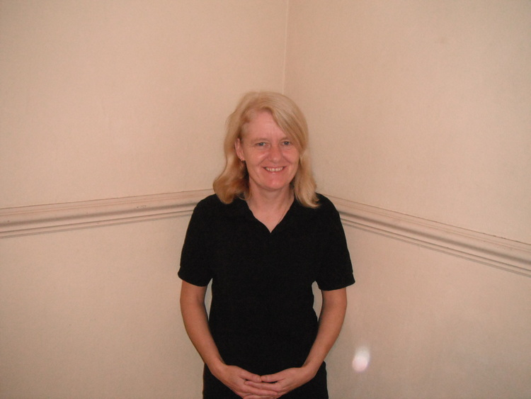

Our Team

Debbie Egan Cleaner

You want your home/business cleaned with the minimum of fuss and disruption so choose The Lancashire Lass and Lad. Cleaning as a team of two makes cleaning your home/business very efficient and cost effective. With the added advantages for example the moving of furniture for Cleaning under can easily and safely be achieved.
We charge £20 per hour inclusive for the team including all equipment and Cleaning materials.
We will come to see you first at a time convenient to you and agree a package to suit your needs We carry full Public Liability Insurance for your peace of mind.
Also Sean with years of experience on the house building industry would be more than happy to quote for any of those little jobs around the home you may need doing.